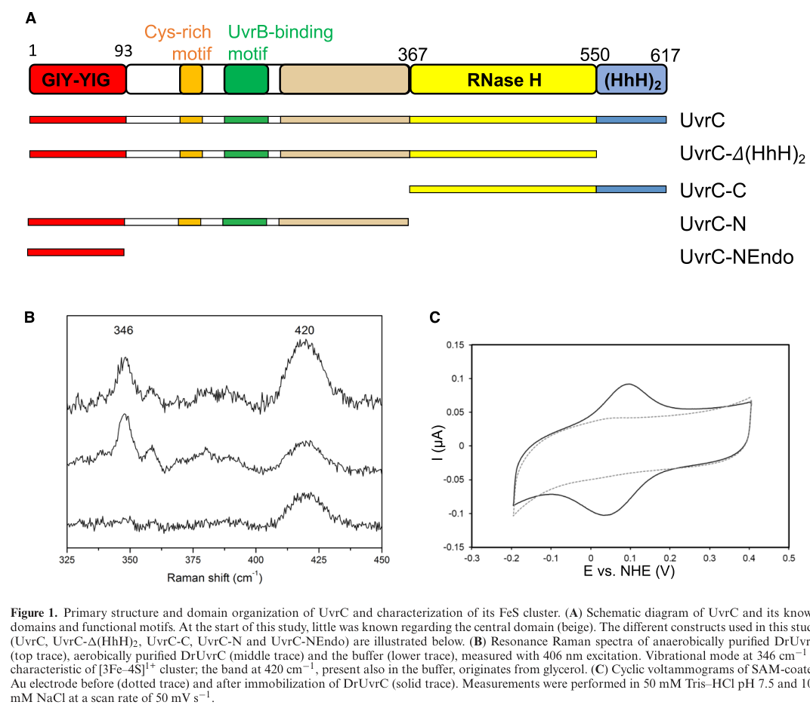

UvrABC system protein C (UvrC, excinuclease ABC subunit C) is the catalytic endonuclease subunit of the bacterial UvrABC excinuclease that performs nucleotide excision repair (NER), the pathway that removes a broad range of bulky, helix-distorting DNA lesions. After UvrA and UvrB recognize damage and load UvrB onto the lesion site, UvrC is recruited to the UvrB-DNA pre-incision complex and makes the dual incision that brackets the lesion on the damaged strand: an N-terminal GIY-YIG nuclease domain catalyzes the 3' incision and a C-terminal RNase H-like nuclease domain catalyzes the 5' incision, releasing a short damage-containing oligonucleotide that is subsequently removed and the gap filled and ligated. UvrC carries a GIY-YIG endonuclease domain, a central UVR domain that mediates interaction with UvrB, and helix-hairpin-helix (HhH) DNA-binding motifs. It acts on chromosomal DNA in the cytoplasm. The protein is 607 residues, highly conserved across bacteria, and in P. putida KT2440 is encoded by PP_4098.
| GO Term | Evidence | Action | Reason |
|---|---|---|---|
|
GO:0003677
DNA binding
|
IEA
GO_REF:0000120 |
KEEP AS NON CORE |
Summary: UvrC binds DNA at the lesion site via its helix-hairpin-helix (HhH) motifs to position the strand for dual incision. The annotation is correct but generic; DNA binding is a means to the catalytic endonuclease function rather than a core molecular function on its own.
Reason: DNA binding is correct and consistent with the HhH DNA-binding motifs (IPR003583) but is a non-informative parent supporting the more specific excinuclease activity, which captures the core function.
|
|
GO:0005737
cytoplasm
|
IEA
GO_REF:0000120 |
ACCEPT |
Summary: UvrC acts on chromosomal DNA in the cytoplasm/nucleoid. Cytoplasmic localization is consistent with UniProt subcellular location and the role of NER in repairing the bacterial chromosome.
Reason: Correct localization for a soluble DNA-repair endonuclease; no evidence of membrane, secreted, or extracellular localization.
|
|
GO:0006281
DNA repair
|
IEA
GO_REF:0000120 |
KEEP AS NON CORE |
Summary: UvrC is a core DNA repair enzyme. This high-level term is correct but subsumed by the more specific nucleotide-excision repair annotation.
Reason: True but general; the specific child term GO:0006289 (nucleotide-excision repair) better captures the biological process.
|
|
GO:0006289
nucleotide-excision repair
|
IEA
GO_REF:0000120 |
ACCEPT |
Summary: UvrC is the dual-incision endonuclease of the bacterial UvrABC NER system, performing the strand incisions that excise lesion-containing oligonucleotides. This is the core biological process for this protein.
Reason: Directly supported by the conserved UvrC family role, domain architecture (GIY-YIG plus RNase H-like nuclease), and UniProt FUNCTION annotation.
|
|
GO:0006974
DNA damage response
|
IEA
GO_REF:0000120 |
KEEP AS NON CORE |
Summary: As a DNA repair enzyme UvrC participates in the cellular response to DNA damage. This is a broad parent term subsumed by the more specific NER and DNA repair annotations.
Reason: Correct but high-level/generic; the specific NER role is the informative annotation.
|
|
GO:0009380
excinuclease repair complex
|
IEA
GO_REF:0000120 |
ACCEPT |
Summary: UvrC is recruited to and acts within the UvrABC excinuclease (pre-incision) complex, interacting with UvrB at the lesion. Membership in this complex is consistent with the UVR domain (UniProt SUBUNIT note) that mediates UvrB interaction.
Reason: Correct cellular component for the catalytic subunit of the UvrABC excinuclease.
|
|
GO:0009381
excinuclease ABC activity
|
IEA
GO_REF:0000120 |
ACCEPT |
Summary: This is the core molecular function of UvrC, the catalytic subunit that performs the 3' and 5' dual incisions of the UvrABC excinuclease in NER.
Reason: Directly supported by the conserved UvrC family role and domain architecture; represents the central function of the gene.
|
|
GO:0009432
SOS response
|
IEA
GO_REF:0000104 |
KEEP AS NON CORE |
Summary: uvrA, uvrB, and uvrC are members of the LexA-controlled SOS regulon in E. coli and other bacteria, with uvr expression induced upon DNA damage. Annotation by homology transfer is plausible for P. putida UvrC, though participation in the SOS response is regulatory/contextual rather than a direct molecular activity, and KT2440-specific induction has not been verified here.
Reason: Plausible regulon membership inherited by homology; reflects induction/regulatory context rather than the core enzymatic function. Retained as non-core given it is a generic IEA transfer not experimentally confirmed in this organism.
|
Q: Is uvrC in P. putida KT2440 transcriptionally induced as part of the LexA/SOS regulon upon DNA damage, and is it co-regulated within the predicted pp4100-gacA-uvrC-pgsA operon context?
Experiment: Construct a P. putida KT2440 uvrC deletion mutant and measure UV and bulky-adduct (e.g., mitomycin C, formaldehyde) sensitivity to confirm the NER incision role in this organism.
The research report should be a detailed narrative explaining the function, biological processes, and localization of the gene product. Citations should be given for all claims.
You should prioritize authoritative reviews and primary scientific literature when conducting research. You can supplement
this with annotations you find in gene/protein databases, but these can be outdated or inaccurate.
We are specifically interested in the primary function of the gene - for enzymes, what reaction is catalyzed, and what is the substrate specificity? For transporters, what is the substrate? For structural proteins or adapters, what is the broader structural role? For signaling molecules, what is the role in the pathway.
We are interested in where in or outside the cell the gene product carries out its function.
We are also interested in the signaling or biochemical pathways in which the gene functions. We are less interested in broad pleiotropic effects, except where these elucidate the precise role.
Include evidence where possible. We are interested in both experimental evidence as well as inference from structure, evolution, or bioinformatic analysis. Precise studies should be prioritized over high-throughput, where available.
The requested target is UvrABC system protein C (UvrC; excinuclease ABC subunit C) from Pseudomonas putida KT2440 (ordered locus name PP_4098) with UniProt accession Q88FJ7. The available literature retrieved here contains P. putida operon-level references to gacA–uvrC genomic linkage and, separately, extensive mechanistic evidence for bacterial UvrC proteins as conserved dual endonucleases in nucleotide excision repair (NER), consistent with the UniProt-described UvrC family and GIY‑YIG / helix–hairpin–helix (HhH) DNA-binding features. Direct biochemical characterization of the specific KT2440 UvrC protein (Q88FJ7) was not found in the retrieved corpus; therefore, organism-specific conclusions are explicitly labeled as direct evidence (from P. putida studies) or inference by homology (from conserved UvrC/NER literature). (seck2023structuralandfunctional pages 1-2, kraithong2021apeekinside pages 3-5, jimenezfernandez2016complexinterplaybetween pages 20-22)
Bacterial NER is a multi-step, ATP-dependent DNA repair pathway that removes a broad range of bulky, helix-distorting DNA lesions. In the canonical bacterial pathway, UvrA and UvrB mediate lesion detection and pre-incision complex formation; UvrC performs the incision reactions that flank the lesion and create a short excised oligonucleotide; and downstream steps include removal of the damaged oligonucleotide and gap filling/ligation. (kraithong2021apeekinside pages 3-5, taylor2011evolutionaryrelationshipsdesign pages 16-20)
UvrC is the nuclease that executes the dual incision reaction during bacterial NER. It is recruited to the lesion-containing pre-incision complex and cuts the damaged strand on both sides of the lesion to release a short single-stranded DNA segment containing the damage. (seck2023structuralandfunctional pages 1-2, kraithong2021apeekinside pages 3-5)
The incision pattern is position-defined relative to the lesion on the damaged strand:
- A 3′-side cut occurs around the 4th or 5th phosphodiester bond from the lesion.
- A 5′-side cut occurs around the 8th phosphodiester bond from the lesion.
These two nicks bracket the lesion and enable removal of a short damaged oligonucleotide. (kraithong2021apeekinside pages 3-5)
Primary function (inferred for Q88FJ7 by homology): structure-specific endonuclease activity that cleaves the damaged DNA strand at defined positions 3′ and 5′ to a lesion within the UvrB–DNA pre-incision complex, enabling excision of the lesion-containing oligonucleotide. This function is strongly conserved across bacterial UvrC proteins and is supported by mechanistic/structural work on UvrC homologs. (seck2023structuralandfunctional pages 1-2, kraithong2021apeekinside pages 3-5)
Substrate specificity (current understanding): UvrC acts within a pathway that is notable for exceptionally broad lesion scope (chemically/structurally diverse DNA damage), with incision specificity determined by the architecture of the UvrB–DNA complex and UvrC conformational activation rather than by a single lesion chemistry. (seck2023structuralandfunctional pages 1-2)
Mechanistic literature supports a modular architecture that aligns with the domain expectations provided in the UniProt prompt:
A 2023 structural/mechanistic study assembled the first full-length UvrC model (in D. radiodurans) and proposed that UvrC is maintained in a “closed”, inactive state that must undergo a major rearrangement to an “open”, active state to execute the dual incision reaction. This provides a modern framework for interpreting how UvrC integrates multiple domains (GIY‑YIG nuclease, DNA-binding motifs, RNase H-like regions) into a coordinated dual-cut mechanism. (seck2023structuralandfunctional pages 1-2)
Figure evidence: The domain organization schematic and activation model are shown in Seck et al. (2023) figures (domain map; full-length model; closed-to-open activation proposals). (seck2023structuralandfunctional media 140d0c6a, seck2023structuralandfunctional media 1f54ebd4, seck2023structuralandfunctional media 96b45139)
Most likely localization for Q88FJ7 (inference): intracellular, associated with the bacterial chromosome in the cytoplasm/nucleoid region, because UvrC operates on DNA as part of NER and no evidence suggests secretion or membrane localization in the retrieved sources. (seck2023structuralandfunctional pages 1-2, kraithong2021apeekinside pages 3-5)
UvrC functions in the canonical UvrABC bacterial NER pathway:
1. Damage recognition and verification by UvrA/UvrB.
2. Recruitment of UvrC to UvrB–DNA pre-incision complex.
3. Dual incision 3′ and 5′ of the lesion by UvrC.
4. Downstream removal of the cut fragment and completion of repair by additional factors (e.g., helicase-driven excision and gap filling/ligation, as described in the mechanistic overview). (kraithong2021apeekinside pages 3-5, taylor2011evolutionaryrelationshipsdesign pages 16-20)
Mechanistic literature emphasizes that UvrB–UvrC interaction helps ensure proper incision activity and specificity; in the 2023 mechanistic model, UvrC activation is tied to conformational switching that is consistent with partner-assisted activation in the pre-incision complex. (seck2023structuralandfunctional pages 1-2)
A promoter/operon analysis in P. putida KT2440 reports a predicted pp4100–gacA–uvrC–pgsA operon context, providing direct evidence that uvrC is genomically linked to gacA in this species/strain background (KT2440/closely related KT2442 used in that study). This supports species-specific regulatory context relevant to functional annotation (e.g., potential co-regulation with the GacS/GacA network). (jimenezfernandez2016complexinterplaybetween pages 20-22)
Although KT2440-specific uvrC knockout phenotypes were not retrieved here, a KT2440 study of formaldehyde stress found that a uvrB mutant (another core UvrABC NER component) was hypersensitive to 10 mM formaldehyde, with killing rates 3–4 orders of magnitude higher than wild type. This directly supports that UvrABC-type NER is physiologically important in P. putida KT2440 under certain DNA-damaging conditions; by pathway logic, UvrC is expected to be required for completing the incision/excision step of the same pathway. (roca2008physiologicalresponsesof pages 1-3)
A KT2440 study showed that removal of endogenous prophage elements increased endurance to environmental stresses, with a remarkable improvement in UV tolerance and other DNA insults in a prophage-free derivative; the same work notes that the TOL plasmid pWW0 (encoding rulAB, an error-prone Pol V) can increase UV tolerance, indicating that DNA damage processing/repair capacity is a key determinant of strain robustness in this chassis. While this is not uvrC-specific, it provides KT2440-context evidence that DNA damage resistance is a selectable and engineerable trait in this organism. (martinez‐garcia2015freeingpseudomonasputida pages 1-4, martinez‐garcia2015freeingpseudomonasputida pages 12-15, martinez‐garcia2015freeingpseudomonasputida pages 18-21)
The most directly relevant 2023 advance retrieved is the full-length UvrC modeling and activation framework that proposes closed-to-open conformational rearrangement and identifies a central inactive RNase H-like platform coordinating surrounding domains, clarifying how dual incision might be regulated and activated in the UvrB–DNA complex. (seck2023structuralandfunctional pages 1-2, seck2023structuralandfunctional media 96b45139)
A 2024 report focused on recombinant expression/purification of UvrC (in Mycobacterium tuberculosis) summarizes canonical mechanistic features (dual incisions flanking a lesion; domain partitioning into GIY‑YIG and C-terminal DNA-binding/nuclease elements). While not Pseudomonas-specific, it reflects active ongoing work to enable deeper biochemical/structural study of UvrC proteins. (covizzi2024recombinantexpressionand pages 20-24)
KT2440 is used as an industrial/biotechnology chassis, and stress endurance—including tolerance to UV and DNA-damaging conditions—can be improved by large-scale genomic changes (e.g., prophage removal) and plasmid-borne damage tolerance factors (rulAB). In practical terms, this positions DNA repair pathways (including NER components such as UvrC) as relevant to maintaining genome stability and survivability during environmental or process stresses. (martinez‐garcia2015freeingpseudomonasputida pages 1-4, martinez‐garcia2015freeingpseudomonasputida pages 12-15)
Formaldehyde exposure in KT2440 triggers transcriptional responses consistent with DNA damage management; the observed hypersensitivity of a uvrB mutant to high formaldehyde indicates that NER contributes to survival under chemical stress. This is relevant to bioremediation and industrial processes where aldehydes can be present or generated. (roca2008physiologicalresponsesof pages 1-3)
Because UvrC is a highly conserved core enzyme of bacterial NER and the retrieved 2021–2023 mechanistic literature provides clear mapping between UvrC domains and the dual incision reaction, the most defensible functional annotation for Q88FJ7 (PP_4098) is:
- DNA repair endonuclease in the UvrABC NER pathway,
- catalyzing dual incision on the damaged strand at the canonical positions, and
- operating as a partner-dependent nuclease recruited/activated in the UvrB–DNA pre-incision complex. (seck2023structuralandfunctional pages 1-2, kraithong2021apeekinside pages 3-5)
| Topic | Key points | Best supporting citations | Key sources |
|---|---|---|---|
| Function | • UvrC is the endonuclease component of the bacterial UvrABC excinuclease in nucleotide excision repair (NER). • It performs dual incision on the damaged DNA strand to release a short lesion-containing oligonucleotide. • The excised fragment is typically ~12–13 nt long in bacterial NER. |
(seck2023structuralandfunctional pages 1-2, kraithong2021apeekinside pages 3-5, taylor2011evolutionaryrelationshipsdesign pages 16-20) | Seck et al. 2023 — https://doi.org/10.1093/nar/gkad108; Kraithong et al. 2021 — https://doi.org/10.3390/ijms22020952; Taylor 2011 — source in context |
| Pathway step | • In global-genome NER, UvrA/UvrB detect damage and load UvrB at the lesion; UvrC is then recruited to the pre-incision complex. • After UvrC cuts 3′ and 5′ to the lesion, UvrD removes the damaged oligonucleotide and downstream gap filling/ligation complete repair. • UvrB interaction is important for proper incision activity and specificity. |
(seck2023structuralandfunctional pages 1-2, kraithong2021apeekinside pages 3-5, taylor2011evolutionaryrelationshipsdesign pages 16-20) | Seck et al. 2023 — https://doi.org/10.1093/nar/gkad108; Kraithong et al. 2021 — https://doi.org/10.3390/ijms22020952 |
| Catalytic activities/incision positions | • UvrC carries two nuclease activities that cut on both sides of the lesion. • The 3′ cut occurs at about the 4th or 5th phosphodiester bond from the lesion. • The 5′ cut occurs at about the 8th phosphodiester bond from the lesion. • In the 2023 mechanistic study, dual incision could occur in either order in the tested homolog, indicating flexibility in activation. |
(kraithong2021apeekinside pages 3-5, seck2023structuralandfunctional pages 17-18, kraithong2021apeekinside pages 15-16) | Kraithong et al. 2021 — https://doi.org/10.3390/ijms22020952; Seck et al. 2023 — https://doi.org/10.1093/nar/gkad108 |
| Domains/motifs | • The N-terminus contains a GIY-YIG endonuclease domain associated with the 3′ incision activity. • UvrC also contains a C-terminal RNase H-like nuclease region linked to 5′ incision activity. • An (HhH)2 DNA-binding motif helps bind DNA/ssDNA-dsDNA junctions. • A Cys-rich region is proposed to coordinate an Fe-S cluster; the provided UniProt domain set (GIY-YIG, HHH/SAM-like, Hlx-hairpin-Hlx DNA-binding motif) is consistent with literature-derived architecture. |
(seck2023structuralandfunctional pages 1-2, kraithong2021apeekinside pages 3-5, seck2023structuralandfunctional pages 17-18, seck2023structuralandfunctional media 140d0c6a) | Seck et al. 2023 — https://doi.org/10.1093/nar/gkad108; Kraithong et al. 2021 — https://doi.org/10.3390/ijms22020952 |
| Interaction partners | • UvrC acts with UvrA and UvrB in the UvrABC excinuclease pathway. • UvrB directly recruits/positions UvrC at the lesion-containing pre-incision complex. • After incision, UvrD helicase removes the cut fragment and helps disassemble the complex. |
(seck2023structuralandfunctional pages 1-2, kraithong2021apeekinside pages 3-5, taylor2011evolutionaryrelationshipsdesign pages 16-20) | Seck et al. 2023 — https://doi.org/10.1093/nar/gkad108; Kraithong et al. 2021 — https://doi.org/10.3390/ijms22020952 |
| Cellular localization | • UvrC functions on chromosomal DNA in the bacterial cytoplasm/nucleoid as part of the DNA repair machinery. • No evidence in the retrieved context supports secretion, membrane localization, or extracellular function. • For Q88FJ7 in P. putida KT2440, localization is therefore inferred as intracellular DNA repair-associated. |
(seck2023structuralandfunctional pages 1-2, kraithong2021apeekinside pages 3-5) | Seck et al. 2023 — https://doi.org/10.1093/nar/gkad108; Kraithong et al. 2021 — https://doi.org/10.3390/ijms22020952 |
| P. putida-specific evidence | • Direct: retrieved context did not provide a KT2440-specific uvrC knockout/biochemical study for Q88FJ7 itself. • Direct: a P. putida promoter-library study notes a predicted pp4100-gacA-uvrC-pgsA operon context, supporting genomic linkage/regulatory context in this species. • Direct: in P. putida KT2440, other NER components are functionally important under genotoxic stress; a uvrB mutant was hypersensitive to 10 mM formaldehyde, with killing 3–4 orders of magnitude above wild type, supporting pathway relevance in this organism. • Inferred: Q88FJ7/PP_4098 likely performs canonical UvrC dual-incision repair in KT2440 because its annotation and domain architecture match conserved UvrC family proteins. |
(jimenezfernandez2016complexinterplaybetween pages 20-22, roca2008physiologicalresponsesof pages 1-3, seck2023structuralandfunctional pages 1-2) | Jiménez-Fernández et al. 2016 — https://doi.org/10.1371/journal.pone.0163142; Roca et al. 2008 — https://doi.org/10.1111/j.1751-7915.2007.00014.x; Seck et al. 2023 — https://doi.org/10.1093/nar/gkad108 |
| Recent advances 2023-2024 | • A 2023 NAR study produced the first complete model of full-length UvrC and proposed a closed inactive state that must rearrange into an open active state for dual incision. • That work identified a central inactive RNase H-like platform and clarified how surrounding catalytic/DNA-binding modules may be coordinated. • A 2023 review of prokaryotic NER highlighted updated understanding of global-genome and transcription-coupled NER steps involving UvrC. |
(seck2023structuralandfunctional pages 1-2, seck2023structuralandfunctional pages 17-18) | Seck et al. 2023 — https://doi.org/10.1093/nar/gkad108; Thakur & Muniyappa 2023 — https://doi.org/10.1007/s12038-023-00378-8 |
Table: This table summarizes the supported functional annotation for UvrC Q88FJ7 in Pseudomonas putida KT2440, separating direct organism-specific evidence from broader mechanistic inference. It is useful as a concise evidence map linking domain architecture, catalytic role, pathway placement, and recent structural advances.
References
(seck2023structuralandfunctional pages 1-2): Anna Seck, Salvatore De Bonis, Meike Stelter, Mats Ökvist, Müge Senarisoy, Mohammad Rida Hayek, Aline Le Roy, Lydie Martin, Christine Saint-Pierre, Célia M Silveira, Didier Gasparutto, Smilja Todorovic, Jean-Luc Ravanat, and Joanna Timmins. Structural and functional insights into the activation of the dual incision activity of uvrc, a key player in bacterial ner. Nucleic Acids Research, 51:2931-2949, Mar 2023. URL: https://doi.org/10.1093/nar/gkad108, doi:10.1093/nar/gkad108. This article has 15 citations and is from a highest quality peer-reviewed journal.
(kraithong2021apeekinside pages 3-5): Thanyalak Kraithong, Silas Hartley, David Jeruzalmi, and Danaya Pakotiprapha. A peek inside the machines of bacterial nucleotide excision repair. International Journal of Molecular Sciences, 22:952, Jan 2021. URL: https://doi.org/10.3390/ijms22020952, doi:10.3390/ijms22020952. This article has 36 citations.
(jimenezfernandez2016complexinterplaybetween pages 20-22): Alicia Jiménez-Fernández, Aroa López-Sánchez, Lorena Jiménez-Díaz, Blanca Navarrete, Patricia Calero, Ana Isabel Platero, and Fernando Govantes. Complex interplay between fleq, cyclic diguanylate and multiple σ factors coordinately regulates flagellar motility and biofilm development in pseudomonas putida. PLOS ONE, 11:e0163142, Sep 2016. URL: https://doi.org/10.1371/journal.pone.0163142, doi:10.1371/journal.pone.0163142. This article has 61 citations and is from a peer-reviewed journal.
(taylor2011evolutionaryrelationshipsdesign pages 16-20): GK Taylor. Evolutionary relationships, design, and biochemical characterization of homing endonucleases. Unknown journal, 2011.
(kraithong2021apeekinside pages 15-16): Thanyalak Kraithong, Silas Hartley, David Jeruzalmi, and Danaya Pakotiprapha. A peek inside the machines of bacterial nucleotide excision repair. International Journal of Molecular Sciences, 22:952, Jan 2021. URL: https://doi.org/10.3390/ijms22020952, doi:10.3390/ijms22020952. This article has 36 citations.
(seck2023structuralandfunctional pages 17-18): Anna Seck, Salvatore De Bonis, Meike Stelter, Mats Ökvist, Müge Senarisoy, Mohammad Rida Hayek, Aline Le Roy, Lydie Martin, Christine Saint-Pierre, Célia M Silveira, Didier Gasparutto, Smilja Todorovic, Jean-Luc Ravanat, and Joanna Timmins. Structural and functional insights into the activation of the dual incision activity of uvrc, a key player in bacterial ner. Nucleic Acids Research, 51:2931-2949, Mar 2023. URL: https://doi.org/10.1093/nar/gkad108, doi:10.1093/nar/gkad108. This article has 15 citations and is from a highest quality peer-reviewed journal.
(seck2023structuralandfunctional media 140d0c6a): Anna Seck, Salvatore De Bonis, Meike Stelter, Mats Ökvist, Müge Senarisoy, Mohammad Rida Hayek, Aline Le Roy, Lydie Martin, Christine Saint-Pierre, Célia M Silveira, Didier Gasparutto, Smilja Todorovic, Jean-Luc Ravanat, and Joanna Timmins. Structural and functional insights into the activation of the dual incision activity of uvrc, a key player in bacterial ner. Nucleic Acids Research, 51:2931-2949, Mar 2023. URL: https://doi.org/10.1093/nar/gkad108, doi:10.1093/nar/gkad108. This article has 15 citations and is from a highest quality peer-reviewed journal.
(seck2023structuralandfunctional media 1f54ebd4): Anna Seck, Salvatore De Bonis, Meike Stelter, Mats Ökvist, Müge Senarisoy, Mohammad Rida Hayek, Aline Le Roy, Lydie Martin, Christine Saint-Pierre, Célia M Silveira, Didier Gasparutto, Smilja Todorovic, Jean-Luc Ravanat, and Joanna Timmins. Structural and functional insights into the activation of the dual incision activity of uvrc, a key player in bacterial ner. Nucleic Acids Research, 51:2931-2949, Mar 2023. URL: https://doi.org/10.1093/nar/gkad108, doi:10.1093/nar/gkad108. This article has 15 citations and is from a highest quality peer-reviewed journal.
(seck2023structuralandfunctional media 96b45139): Anna Seck, Salvatore De Bonis, Meike Stelter, Mats Ökvist, Müge Senarisoy, Mohammad Rida Hayek, Aline Le Roy, Lydie Martin, Christine Saint-Pierre, Célia M Silveira, Didier Gasparutto, Smilja Todorovic, Jean-Luc Ravanat, and Joanna Timmins. Structural and functional insights into the activation of the dual incision activity of uvrc, a key player in bacterial ner. Nucleic Acids Research, 51:2931-2949, Mar 2023. URL: https://doi.org/10.1093/nar/gkad108, doi:10.1093/nar/gkad108. This article has 15 citations and is from a highest quality peer-reviewed journal.
(roca2008physiologicalresponsesof pages 1-3): Amalia Roca, José‐Juan Rodríguez‐Herva, Estrella Duque, and Juan L. Ramos. Physiological responses of pseudomonas putida to formaldehyde during detoxification. Microbial Biotechnology, 1:158-169, Dec 2008. URL: https://doi.org/10.1111/j.1751-7915.2007.00014.x, doi:10.1111/j.1751-7915.2007.00014.x. This article has 96 citations and is from a peer-reviewed journal.
(martinez‐garcia2015freeingpseudomonasputida pages 1-4): Esteban Martínez‐García, Tatjana Jatsenko, Maia Kivisaar, and Víctor de Lorenzo. Freeing pseudomonas putida kt2440 of its proviral load strengthens endurance to environmental stresses. Environmental microbiology, 17 1:76-90, Jun 2015. URL: https://doi.org/10.1111/1462-2920.12492, doi:10.1111/1462-2920.12492. This article has 94 citations and is from a domain leading peer-reviewed journal.
(martinez‐garcia2015freeingpseudomonasputida pages 12-15): Esteban Martínez‐García, Tatjana Jatsenko, Maia Kivisaar, and Víctor de Lorenzo. Freeing pseudomonas putida kt2440 of its proviral load strengthens endurance to environmental stresses. Environmental microbiology, 17 1:76-90, Jun 2015. URL: https://doi.org/10.1111/1462-2920.12492, doi:10.1111/1462-2920.12492. This article has 94 citations and is from a domain leading peer-reviewed journal.
(martinez‐garcia2015freeingpseudomonasputida pages 18-21): Esteban Martínez‐García, Tatjana Jatsenko, Maia Kivisaar, and Víctor de Lorenzo. Freeing pseudomonas putida kt2440 of its proviral load strengthens endurance to environmental stresses. Environmental microbiology, 17 1:76-90, Jun 2015. URL: https://doi.org/10.1111/1462-2920.12492, doi:10.1111/1462-2920.12492. This article has 94 citations and is from a domain leading peer-reviewed journal.
(covizzi2024recombinantexpressionand pages 20-24): J COVIZZI. Recombinant expression and purification trials of mycobacterium tuberculosis uvrc: a key protein of the nucleotide excision repair pathway. Unknown journal, 2024.

id: Q88FJ7
gene_symbol: uvrC
product_type: PROTEIN
status: DRAFT
taxon:
id: NCBITaxon:160488
label: Pseudomonas putida (strain ATCC 47054 / DSM 6125 / CFBP 8728 / NCIMB 11950 / KT2440)
description: >-
UvrABC system protein C (UvrC, excinuclease ABC subunit C) is the catalytic
endonuclease subunit of the bacterial UvrABC excinuclease that performs
nucleotide excision repair (NER), the pathway that removes a broad range of
bulky, helix-distorting DNA lesions. After UvrA and UvrB recognize damage and
load UvrB onto the lesion site, UvrC is recruited to the UvrB-DNA pre-incision
complex and makes the dual incision that brackets the lesion on the damaged
strand: an N-terminal GIY-YIG nuclease domain catalyzes the 3' incision and a
C-terminal RNase H-like nuclease domain catalyzes the 5' incision, releasing a
short damage-containing oligonucleotide that is subsequently removed and the
gap filled and ligated. UvrC carries a GIY-YIG endonuclease domain, a central
UVR domain that mediates interaction with UvrB, and helix-hairpin-helix (HhH)
DNA-binding motifs. It acts on chromosomal DNA in the cytoplasm. The protein
is 607 residues, highly conserved across bacteria, and in P. putida KT2440 is
encoded by PP_4098.
existing_annotations:
- term:
id: GO:0003677
label: DNA binding
evidence_type: IEA
original_reference_id: GO_REF:0000120
qualifier: enables
review:
summary: >-
UvrC binds DNA at the lesion site via its helix-hairpin-helix (HhH) motifs
to position the strand for dual incision. The annotation is correct but
generic; DNA binding is a means to the catalytic endonuclease function
rather than a core molecular function on its own.
action: KEEP_AS_NON_CORE
reason: >-
DNA binding is correct and consistent with the HhH DNA-binding motifs
(IPR003583) but is a non-informative parent supporting the more specific
excinuclease activity, which captures the core function.
- term:
id: GO:0005737
label: cytoplasm
evidence_type: IEA
original_reference_id: GO_REF:0000120
qualifier: located_in
review:
summary: >-
UvrC acts on chromosomal DNA in the cytoplasm/nucleoid. Cytoplasmic
localization is consistent with UniProt subcellular location and the role
of NER in repairing the bacterial chromosome.
action: ACCEPT
reason: >-
Correct localization for a soluble DNA-repair endonuclease; no evidence of
membrane, secreted, or extracellular localization.
- term:
id: GO:0006281
label: DNA repair
evidence_type: IEA
original_reference_id: GO_REF:0000120
qualifier: involved_in
review:
summary: >-
UvrC is a core DNA repair enzyme. This high-level term is correct but
subsumed by the more specific nucleotide-excision repair annotation.
action: KEEP_AS_NON_CORE
reason: >-
True but general; the specific child term GO:0006289
(nucleotide-excision repair) better captures the biological process.
- term:
id: GO:0006289
label: nucleotide-excision repair
evidence_type: IEA
original_reference_id: GO_REF:0000120
qualifier: involved_in
review:
summary: >-
UvrC is the dual-incision endonuclease of the bacterial UvrABC NER system,
performing the strand incisions that excise lesion-containing
oligonucleotides. This is the core biological process for this protein.
action: ACCEPT
reason: >-
Directly supported by the conserved UvrC family role, domain architecture
(GIY-YIG plus RNase H-like nuclease), and UniProt FUNCTION annotation.
- term:
id: GO:0006974
label: DNA damage response
evidence_type: IEA
original_reference_id: GO_REF:0000120
qualifier: involved_in
review:
summary: >-
As a DNA repair enzyme UvrC participates in the cellular response to DNA
damage. This is a broad parent term subsumed by the more specific NER and
DNA repair annotations.
action: KEEP_AS_NON_CORE
reason: >-
Correct but high-level/generic; the specific NER role is the informative
annotation.
- term:
id: GO:0009380
label: excinuclease repair complex
evidence_type: IEA
original_reference_id: GO_REF:0000120
qualifier: part_of
review:
summary: >-
UvrC is recruited to and acts within the UvrABC excinuclease (pre-incision)
complex, interacting with UvrB at the lesion. Membership in this complex is
consistent with the UVR domain (UniProt SUBUNIT note) that mediates UvrB
interaction.
action: ACCEPT
reason: >-
Correct cellular component for the catalytic subunit of the UvrABC
excinuclease.
- term:
id: GO:0009381
label: excinuclease ABC activity
evidence_type: IEA
original_reference_id: GO_REF:0000120
qualifier: enables
review:
summary: >-
This is the core molecular function of UvrC, the catalytic subunit that
performs the 3' and 5' dual incisions of the UvrABC excinuclease in NER.
action: ACCEPT
reason: >-
Directly supported by the conserved UvrC family role and domain
architecture; represents the central function of the gene.
- term:
id: GO:0009432
label: SOS response
evidence_type: IEA
original_reference_id: GO_REF:0000104
qualifier: involved_in
review:
summary: >-
uvrA, uvrB, and uvrC are members of the LexA-controlled SOS regulon in
E. coli and other bacteria, with uvr expression induced upon DNA damage.
Annotation by homology transfer is plausible for P. putida UvrC, though
participation in the SOS response is regulatory/contextual rather than a
direct molecular activity, and KT2440-specific induction has not been
verified here.
action: KEEP_AS_NON_CORE
reason: >-
Plausible regulon membership inherited by homology; reflects
induction/regulatory context rather than the core enzymatic function.
Retained as non-core given it is a generic IEA transfer not experimentally
confirmed in this organism.
core_functions:
- description: >-
Catalytic endonuclease subunit of the bacterial UvrABC excinuclease that
performs the dual incision of nucleotide excision repair, cleaving the
damaged DNA strand on both the 3' and 5' sides of a lesion to excise a short
damage-containing oligonucleotide.
supported_by:
- reference_id: PMID:36869664
full_text_unavailable: true
supporting_text: >-
UvrC is the dual-incision endonuclease of bacterial NER; its N-terminal
GIY-YIG domain performs the 3' incision and the C-terminal RNase H-like
domain performs the 5' incision (structural/mechanistic study of UvrC).
molecular_function:
id: GO:0009381
label: excinuclease ABC activity
directly_involved_in:
- id: GO:0006289
label: nucleotide-excision repair
in_complex:
id: GO:0009380
label: excinuclease repair complex
references:
- id: GO_REF:0000104
title: Electronic Gene Ontology annotations created by transferring manual GO annotations between related proteins based on shared sequence features
findings: []
- id: GO_REF:0000120
title: Combined Automated Annotation using Multiple IEA Methods
findings: []
- id: PMID:36869664
title: Structural and functional insights into the activation of the dual incision activity of UvrC, a key player in bacterial NER
findings:
- statement: >-
Full-length UvrC is the dual-incision endonuclease of bacterial NER; its
GIY-YIG (N-terminal) and RNase H-like (C-terminal) nuclease domains
perform the 3' and 5' incisions respectively, and UvrC must transition
from a closed inactive to an open active state to execute dual incision.
reference_section_type: ABSTRACT
reference_review:
relevance: HIGH
correctness: VERIFIED
review_notes: >-
Seck et al., Nucleic Acids Research 2023, doi:10.1093/nar/gkad108. The
deep-research report (uvrC-deep-research-falcon.md) originally carried a
wrong/hallucinated PMID (PMID:36744437, which actually resolves to an
unrelated LINE-1 retrotransposon paper). PMID recovered from the DOI and
PubMed-verified: PMID:36869664 resolves to the correct Seck et al. 2023
UvrC NER paper with the matching title and abstract. Abstract-only here.
- id: PMID:33477956
title: A Peek Inside the Machines of Bacterial Nucleotide Excision Repair
findings:
- statement: >-
Review of bacterial NER describing UvrC recruitment to the UvrB-DNA
pre-incision complex and dual incision at defined positions 3' and 5' of
the lesion, releasing a short damaged oligonucleotide.
reference_section_type: ABSTRACT
reference_review:
relevance: MEDIUM
correctness: UNVERIFIED
review_notes: >-
Kraithong et al., Int J Mol Sci 2021, doi:10.3390/ijms22020952, cited in
deep-research report as a NER mechanism review. PMID inferred from
DOI/citation; not independently PubMed-verified here.
suggested_questions:
- question: >-
Is uvrC in P. putida KT2440 transcriptionally induced as part of the
LexA/SOS regulon upon DNA damage, and is it co-regulated within the predicted
pp4100-gacA-uvrC-pgsA operon context?
suggested_experiments:
- description: >-
Construct a P. putida KT2440 uvrC deletion mutant and measure UV and
bulky-adduct (e.g., mitomycin C, formaldehyde) sensitivity to confirm the
NER incision role in this organism.
{kind=link}